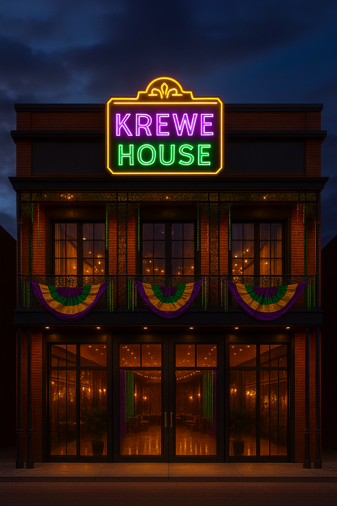
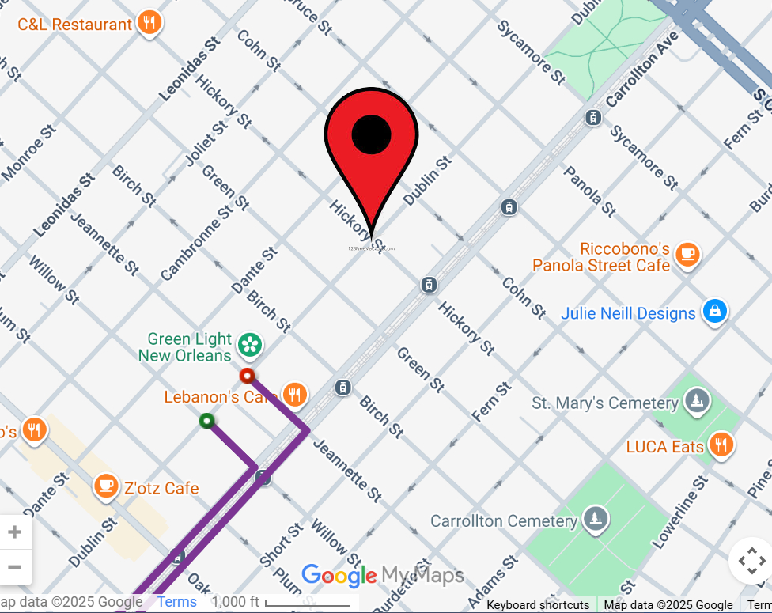

Krewe House is situated in the garden district in walking distance of the famous St.Charles street car line. The parade floats are scheduled to begin each parade at krewe house, so people of all ages can enjoy Mardi Gras without the stress of finding parking, a bathroom, and a good spot to catch your beads!! Krewe House is designed to accomodate those who wish to have dinner while they watch the floats go by, and the people who simply want to catch as many beads as possible.

Design and code by AnnelieStudio